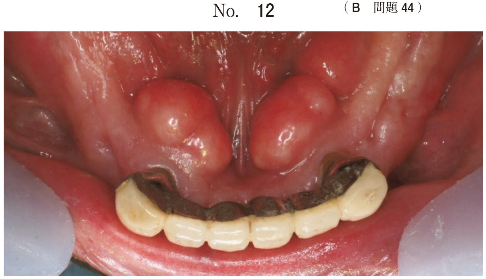

てんかんは反復性の痙攣を主徴とし、通常は意識障害を伴う。脳波上では棘波・棘徐波複合が観察される。原因不明の特発性てんかんと、脳疾患に続発する症候性てんかんに大別される。
| 発作型 | 特徴 |
|---|---|
| 大発作（強直間代発作） | 強直性痙攣→間代性痙攣に移行。意識消失・転倒・呼吸停止・チアノーゼ |
| 小発作（欠神発作） | 数秒～十数秒の意識消失。痙攣を伴わない |
| 側頭葉てんかん | 自動症（口をモグモグさせる等）、意識変容 |
| Jackson てんかん | 身体の一部から始まり全身に広がる部分発作 |
開口保持が禁忌の理由：強直間代発作中の咬筋は極めて強い力で収縮しており、物を差し込むと歯の破折・口腔粘膜の損傷・介助者の負傷を招く。舌咬傷は発作の極初期に起きるため、開口保持では間に合わない。
抗てんかん薬を服用している患者が歯科治療中にけいれん発作を起こした。
適切な対応はどれか。1つ選べ。
【解説】てんかんの痙攣発作時は気道確保が最優先。意識消失に伴う舌根沈下で気道閉塞のリスクがある。胸骨圧迫・AEDは心停止時の対応であり、痙攣発作では不要。人工呼吸は痙攣中は困難。開口保持は歯の破折や介助者の負傷を招くため禁忌である。
| 薬剤 | 歯科的副作用・注意点 |
|---|---|
| フェニトイン | 歯肉増殖（服用患者の約50%に出現）。プラークコントロールで抑制可能。重度なら歯肉切除術 |
| カルバマゼピン | マクロライド系抗菌薬（エリスロマイシン等）で血中濃度上昇 → 運動失調・意識低下 |
| バルプロ酸 | マクロライド系抗菌薬・アスピリンで血中濃度上昇 → 意識障害・痙攣 |
抗てんかん薬服用中の患者にマクロライド系抗菌薬は避ける（薬物相互作用のリスク）
抗精神病薬はドーパミンD2受容体を遮断することで効果を発揮するが、錐体外路系にも影響し不随意運動などの副作用を生じる。発症時期により4つに分類される。
| 分類 | 発症時期 | 症状 |
|---|---|---|
| 急性ジストニア | 投与直後〜数日 | 首のねじれ（斜頸）、眼球上転、舌突出。痛みを伴う |
| アカシジア | 数日〜数週 | 内的焦燥感、じっとしていられない、足踏み |
| パーキンソニズム | 数週〜数か月 | 振戦、固縮、無動、仮面様顔貌 |
| 遅発性ジスキネジア | 数か月〜数年 | 口・舌・顔面の反復的不随意運動。難治性 |
| 項目 | 遅発性ジスキネジア | ジストニア |
|---|---|---|
| 運動パターン | 不規則で反復的（口をモグモグ、舌の左右運動） | 持続的な筋収縮で特定の肢位を維持 |
| 好発部位 | 口唇・舌・顔面が中心 | 頸部・体幹にも及ぶ |
| 痛み | 通常なし | 痛みを伴うことが多い |
| 発症時期 | 長期投与後（遅発性） | 急性（投与直後）or 遅発性 |
原因薬剤：第1世代（定型）抗精神病薬（ハロペリドール等）でリスクが高い。制吐薬（メトクロプラミド）、三環系抗うつ薬でも生じうる。
68歳の女性。上下顎義歯の接触音を主訴として来院した。1年前に気付いたがそのままにしていたという。3年前にうつ病と診断され、現在も抗うつ薬を服用している。他に特記すべき既往歴はない。初診時の口もとで繰り返される一連の動きの写真（別冊No.16）を別に示す。
考えられるのはどれか。1つ選べ。

【解説】抗うつ薬の長期服用後に口元で繰り返される不随意運動 → 遅発性ジスキネジア。口唇・舌・顔面に好発する反復的な不随意運動が特徴。ジストニアは持続的な筋収縮（斜頸等）で異なる。アロディニアは通常は痛みを感じない刺激で痛みを生じる異常知覚であり不随意運動ではない。Parkinson様症状は振戦・固縮・無動が主徴。
フェノチアジン系抗精神病薬（クロルプロマジン等）はα1受容体を遮断する。この状態でアドレナリン含有局所麻酔薬を投与すると、β2受容体刺激が優位となり血管拡張→血圧低下（アドレナリン反転）が起きる。
| 影響 | 原因薬剤 | 機序 |
|---|---|---|
| 口腔乾燥 | 三環系抗うつ薬、フェノチアジン系、抗パーキンソン病薬 | 抗コリン作用による唾液分泌抑制 |
| 歯肉増殖 | フェニトイン（抗てんかん薬） | 線維芽細胞の増殖促進 |
| 齲蝕多発 | 口腔乾燥を起こす薬剤全般 | 唾液の自浄作用・緩衝作用の低下 |
| 錐体外路症状 | 抗精神病薬、制吐薬 | ドーパミンD2受容体遮断 |